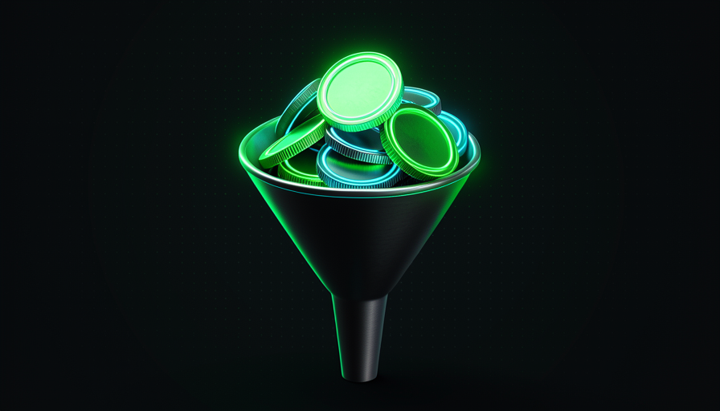
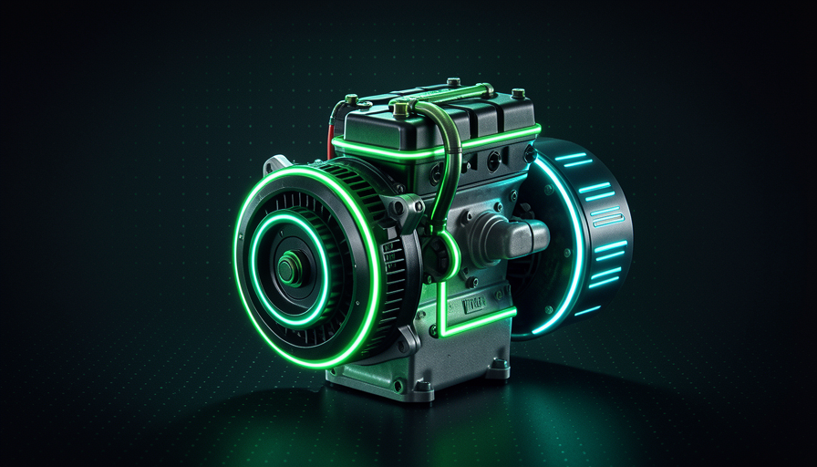

📖 Glossário vivo (leia antes — volte sempre que precisar)
Este módulo fala de custo. Antes de tudo, fixe o que é um token — é a "moeda" que você gasta quando usa IA. Os demais termos você já viu nos módulos 1.1–1.4; aqui eles voltam aplicados ao bolso:
🏗️ Arquitetura reduz tokens
🧠 Imagine assim: você pede a um entregador pra deixar um pacote. Numa casa com endereço claro e portão na frente, ele entrega em 2 minutos. Num condomínio labiríntico sem placa, ele anda em círculos por meia hora — e você paga pela hora dele. O pacote é o mesmo; o terreno é que decidiu o custo.
A frase-chave de Matt Pocock neste tema é direta: "Como você otimiza o gasto de tokens? Tendo um codebase mais fácil de fazer mudanças." Repare: a resposta dele não é "use um prompt mágico" nem "espere um modelo melhor". É arquitetura — a forma como seu codebase é organizado. Cada vez que o agente precisa entender o código pra mudar algo, ele lê arquivos (tokens de entrada) e escreve tentativas (tokens de saída). Quanto mais confuso o terreno, mais ele precisa ler e tentar — e o token spend sobe.
Por que isso é fundamento e não detalhe? Porque o preço da IA é cobrado por token — tanto o que entra quanto o que sai. Um arquivo gigante com mil linhas força o agente a engolir tudo só pra mudar uma função. Já um codebase modular (arquivos pequenos, nomes óbvios, cada coisa no seu lugar) deixa o agente ler só o pedaço relevante. Mesma tarefa, mesmo modelo, fração dos tokens. O erro comum de iniciante é tratar o custo da IA como um número fixo da fatura — quando, na verdade, ele é uma consequência direta de quão navegável você deixou o seu código.
Mesma tarefa, mesmo modelo. A diferença de custo está toda na arquitetura.

⚠️ Erro comum de iniciante
Achar que "a IA está cara" é culpa do modelo e que a solução é assinar um plano maior. Quase sempre é o oposto: o codebase está forçando o agente a ler e tentar muito mais do que precisava. A fatura é um sintoma da arquitetura.
Em 1 frase: um codebase fácil de mudar é um codebase barato de mudar — porque o agente lê e tenta menos.
Indo mais fundo (opcional): por que "token" e não "palavra"?
Modelos não leem letra por letra nem palavra por palavra — eles quebram o texto em "tokens", pedaços que repetem muito na língua (prefixos, sufixos, palavras inteiras curtas). Uma palavra comum vira 1 token; uma rara ou comprida vira vários. Por isso o preço é por token: é a unidade que o modelo realmente processa. Estimativa prática em português/código: divida o número de caracteres por ~4 pra ter a ordem de grandeza de tokens.
🛡️ Guard rails poupam cabeçadas
🧠 Imagine assim: aquelas pistas de boliche infantil com muretas nas calhas. A criança não precisa ser uma jogadora profissional pra derrubar pinos — a mureta corrige a bola pra ela. Guard rails fazem isso com a IA: ela não precisa ser genial se o codebase a empurra de volta pro caminho certo.
Pocock usa uma imagem ótima pra o custo: sem proteção, o modelo fica "batendo a cabeça na parede" — tentando, falhando, tentando de novo, queimando tokens a cada tentativa. A solução não é um modelo mais esperto: são guard rails. Um guard rail é qualquer coisa no codebase que impede o caminho errado e aponta o certo: um tipo (type) que não compila se você passar o valor errado; um teste que falha na hora; um linter que reclama; uma mensagem de erro clara que diz exatamente o que está faltando.
O porquê é puro custo: cada guard rail transforma uma cabeçada cara (o agente descobre o erro tarde, depois de reescrever meio sistema) numa correção barata (o erro aparece na hora, em uma linha). Pocock resume: "guard rails melhores, menos tokens batendo a cabeça na parede." O erro comum aqui é o oposto disto — gente que remove os testes "pra ir mais rápido". Sem guard rails, a IA anda no escuro, erra mais longe e te custa mais caro a cada passo.
🔬 Exemplo resolvido: o type que economiza 10 tentativas
A IA precisa chamar uma função enviarEmail(destino, assunto, corpo).
Sem guard rail
A função aceita qualquer coisa. A IA chama enviarEmail(corpo, destino) trocado. Nada reclama na hora. Só quebra rodando, ela relê tudo, tenta de novo, relê de novo… 8 tentativas, milhares de tokens.
Com guard rail (type)
Os parâmetros têm tipos. Na 1ª tentativa errada, o type-check grita "destino espera Email, recebeu Texto". A IA corrige na hora. 1 tentativa, poucos tokens.
Em 1 frase: guard rail é a mureta que faz a IA acertar sem ser gênio — e cada acerto na hora economiza tokens.
🪙 Quando um modelo mais burro basta
🧠 Imagine assim: numa cozinha bem organizada — tudo rotulado, faca afiada, receita na bancada — até um cozinheiro iniciante faz um prato decente. Numa cozinha caótica, só um chef experiente se vira. A cozinha (o harness) decide qual nível de cozinheiro (modelo) você precisa.
Aqui está o coração do módulo, na frase de Pocock: "Tenha um codebase mais fácil de mudar → você pode empregar um modelo mais burro/mais barato pra fazer o mesmo trabalho." Repare na lógica: a capacidade necessária do modelo não é fixa — ela depende de quão difícil você tornou a tarefa. Um harness bom baixa a barra de inteligência exigida. Por isso um modelo mais barato consegue entregar o que, num codebase ruim, só um modelo caro entregaria.
E o reverso, que Pocock chama pelo nome: "Hamstring seu modelo desde o dia um → você precisa de um modelo esperto." Hamstringing (literalmente "cortar o tendão") é entregar à IA um terreno confuso, sem guard rails, sem documentação. Aí ela tropeça em tudo, e você é obrigado a pagar pelo modelo top só pra ele não se perder. Conexão com o módulo 1.1: como o harness é 50% do resultado, é ele — não o modelo — que define o teto de custo. O erro comum é a corrida pelo "modelo do momento": investir no motor caro pra compensar um chassi que você mesmo poderia ter consertado por muito menos.

Recuperação rápida: o que significa "hamstring seu modelo"?
Em 1 frase: codebase fácil = modelo barato basta; codebase difícil (hamstring) = você é obrigado a pagar pelo modelo caro.
🕳️ O custo real de um codebase ruim
🧠 Imagine assim: uma torneira pingando. Cada pingo é barato — você nem nota. Mas no fim do mês a conta de água assusta. Um codebase ruim pinga tokens em toda mudança, o ano inteiro.
O custo de um codebase ruim não é uma cobrança única; é um imposto recorrente sobre cada tarefa futura. A IA relê arquivos que não precisava ler, tenta abordagens que um guard rail teria barrado, e gera código que quebra outras partes (porque não tinha como saber que existiam). Cada uma dessas idas e vindas é token gasto. Multiplique por todas as mudanças do projeto e o "imposto" vira a maior linha da sua fatura.
Tem um efeito ainda mais traiçoeiro: um codebase ruim também esconde bugs, e bugs escondidos custam tokens (e dinheiro) toda vez que a IA tropeça neles. Pocock observa que muitos bugs profundos não exigem um modelo genial pra serem achados — "você poderia descobrir esses bugs com modelos mais baratos se olhasse nos lugares certos e desse o prompt/harness certo." Ou seja: o que parecia "precisar de IA cara" era, de novo, um problema de harness. O erro comum é normalizar a torneira pingando ("é assim mesmo, IA é cara") em vez de fechar a torneira.
Em 1 frase: codebase ruim não cobra uma vez — cobra um imposto de tokens em cada mudança futura.
Indo mais fundo (opcional): "se roubam sua bike, compre um cadeado"
Pocock usa essa analogia: se um bug (ou um custo) se repete, não basta corrigir o caso — instale o "cadeado" que impede a próxima vez. No nosso tema: se uma área do código sempre faz a IA gastar muitos tokens, não basta pagar a conta — refatore essa área e adicione guard rails. É a diferença entre tratar o sintoma e tratar a causa raiz. (Você verá isso virar sistema na Trilha 4, "Sistemas auto-melhoráveis".)
🔧 Refatorar pra baratear
🧠 Imagine assim: afiar o machado antes de cortar a árvore. Parar 10 minutos pra afiar parece atraso — mas cada corte depois é o dobro mais rápido. Refatorar é afiar o machado do seu codebase.
A boa notícia: você não está preso ao codebase que tem. Refatorar é reorganizar o código por dentro — quebrar o arquivo gigante em módulos, dar nomes claros, adicionar tipos e testes — sem mudar o que o sistema faz por fora. E aqui mora a virada: a própria IA refatora pra você. Você gasta tokens uma vez pra arrumar a casa, e a cada mudança futura paga muito menos. É investimento, não despesa.
Como Pocock põe em DX × AX: melhorar o codebase é uma das alavancas "frequentemente esquecidas" pra melhorar a experiência do agente — e, com ela, o custo. Refatorar adiciona guard rails (tópico 2), torna o terreno navegável (tópico 1) e fecha a torneira pingando (tópico 4) — os três de uma vez. O erro comum é adiar refatoração "pra quando der tempo": como o custo é recorrente, cada dia adiado é mais tokens jogados fora. Veja na copybox abaixo como muda só o jeito de pedir a refatoração — do prompt vago ao prompt com guard rails:
❌ ANTES (prompt vago → muitos tokens, resultado incerto) "arruma esse arquivo aí, tá uma bagunça" ✅ DEPOIS (prompt com guard rails → poucos tokens, resultado seguro) Refatore o arquivo src/pagamento.js, SEM mudar o comportamento. Objetivo: baratear mudanças futuras. Regras (guard rails): 1. Quebre em módulos pequenos por responsabilidade (1 arquivo = 1 tema). 2. Adicione TIPOS nas funções públicas (assinaturas explícitas). 3. NÃO toque na lógica de negócio — só na organização. 4. Rode os testes existentes ao final; todos têm que continuar passando. 5. Se faltar teste pra um caminho crítico, escreva o teste antes de mover o código. Entregue: lista do que mudou + confirmação de testes verdes.
Em 1 frase: refatorar é afiar o machado — gasta token uma vez pra economizar token em toda mudança seguinte.
📊 Métrica: tokens por mudança
🧠 Imagine assim: o consumo do seu carro: litros por 100 km. Você não olha só o tanque cheio — olha quanto gasta por viagem. Com IA, a métrica equivalente é tokens por mudança.
O que não se mede não se melhora. A métrica certa não é "quanto gastei no mês" (isso esconde a causa), e sim tokens por mudança: quantos tokens uma tarefa típica consome, do pedido à entrega. Quando esse número está alto, é sinal de hamstringing — o codebase está obrigando o agente a ler e tentar demais. Quando cai depois de uma refatoração, você acabou de provar, em número, que o harness ficou melhor. É o resumo prático de todo o módulo: arquitetura (T1) e guard rails (T2) baixam o número; um codebase ruim (T4) o infla; refatorar (T5) o derruba; e um número baixo libera o modelo barato (T3). Copie o checklist abaixo e rode-o sempre que uma tarefa gastar mais do que devia:
Tarefa gastou tokens demais? Diagnostique o HARNESS, não o modelo: [ ] ARQUITETURA — a IA teve que ler arquivos gigantes/irrelevantes? [ ] GUARD RAILS — faltou type/teste/lint pra barrar o erro na hora? [ ] DOCS — faltou um README/comentário apontando o lugar certo? [ ] REPETIÇÃO — a IA tentou, errou e retentou o mesmo erro várias vezes? Ação: refatore a área cara + adicione 1 guard rail. Depois, reduza o modelo (ex.: do caro pro barato) e confirme que ainda passa. Meta: o número de "tokens por mudança" cair na próxima vez.
Recuperação rápida: qual métrica mostra MELHOR se o seu harness ficou mais barato?
Em 1 frase: meça tokens por mudança — é o "litros por 100 km" do seu harness, e o que você corta de verdade.
🧾 Resumo do Módulo
Próximo módulo:
1.6 — Context window escasso: por que cada skill "cobra" espaço no contexto e como manter a higiene.